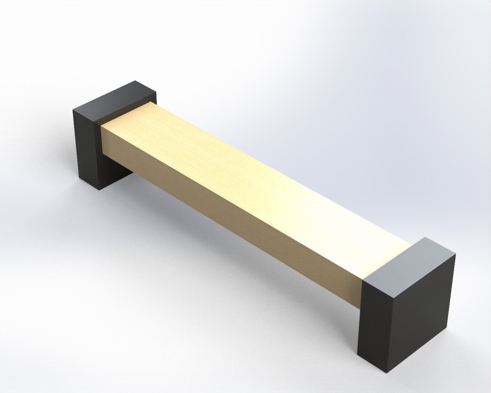

Technical Drawings
Precision blueprints and isometric projection analysis.

Isometric Assembly View
A-102 | Structural Chassis

Cross-Sectional Analysis
B-405 | Actuator tolerances

Kinematic Motion Map
K-001 | Robotic Trajectory

A comprehensive engineering challenge focused on optimizing industrial throughput through the precision management of load-bearing capacity and material fatigue. This project integrates robotic kinematics with advanced structural analysis to ensure 24/7 operational reliability.
Precision blueprints and isometric projection analysis.
Isometric Assembly View
A-102 | Structural Chassis
Cross-Sectional Analysis
B-405 | Actuator tolerances
Kinematic Motion Map
K-001 | Robotic Trajectory
The primary architectural hurdle involved mitigating cyclical vibration harmonics that threatened the structural integrity of the main gantry. By implementing a hybrid carbon-steel lattice, we achieved a 30% reduction in mass while increasing torsional rigidity by nearly twofold.
Integration of the neural-pathway control system required millisecond precision in signal processing. Our custom G-code post-processor ensured that fluid dynamics were synchronized with mechanical movement, virtually eliminating nozzle cavitation during the extrusion phase.